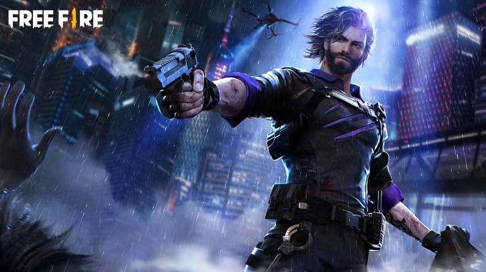

02 SETEM 22
2

Andrew
Andrew era um policial. Com seu forte senso de justiça, ele passou a maior parte do tempo perseguindo criminosos. Seu single era seu encanto de sorte, ele já havia perdido a conta do número de lutas que ele sobreviveu usando. Procurar a verdade por trás de tudo era seu chamado do dever